This section describes how SNAP can be used for manual segmentation. You will learn about working with segmentation labels, painting regions ontwo-dimensional slices of the image, and saving and loading segmentation results. This section requires approximately 10 minutes to complete.
To segment an anatomical structure in SNAP means to assign a label to each voxel in the structure. A label is a number between 0 and 255. Associated with each label is a name and a set of display settings, such as the color used to display the label. For example, we can associate the name 'cuadate' and the color red with the label 3. When you first load a grey image into SNAP, the special label 0 is assigned to each voxel in the image. This label is associated with the name 'Clear' and means that a pixel has not been segmented yet.
When you first load SNAP, it creates a default set of six labels, with names 'Label 1' through 'Label 6'. Before starting segmentation, we will edit these labels, assigning them meaningful names and colors.
The SNAP control panel contains a sub-panel that is used to interact with segmentation labels. It is shown below.
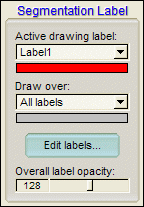
At the top of this sub-panel are two drop-down boxes. The first box is used to select the label that is currently used for manual and automatic segmentation. The second box is used to select the label or labels that are affected by the segmentation. We will see how to use these drop boxes a few steps below. Below the drop-boxes is located a button called 'Edit Labels...', which is used to associate names and colors with label numbers.
| Press the 'Edit labels...' button. The following window will appear. |
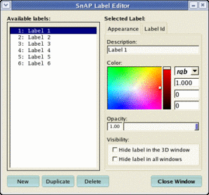
This label editor can be used to modify information associated with each label and to add new labels. The left pane of the editor lists the labels that are currently available. The right pane is used to modify the label currently selected in the list. You can change the color in which the label appears in SNAP, the name associated with the label, and the transparency of the label.
Change the description text box to 'Caudate' Change the color associated with the label to light green Press the 'Close Window' button to apply the changes and close the window |
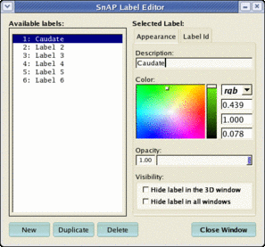
The following additional information is associated with each label: Opacity: A label can be made to appear partially transparent when it is displayed in the 3D window. This is useful when one structure, such as the skull, obstructs the view of another. Visibility: A label can be hidden from display, either in the 3D window or in all windows. Like transparency, this can be used to hide obstructing structures. Additionally, you can tell SNAP to apply manual and automatic segmentation only to voxels with labels that are not hidden. Thus, by hiding a label, it is possible to prevent various segmentation operations from affecting it. |
If you have downloaded an image archive, as recommended in Section 2, Step 1, then you can load a set of segmentation labels from a file.
Select File | Load Data | Label Descriptions... using the menu bar. A dialog will appear. Use the 'Browse...' button to locate and select the file MRIcrop-seg.label Load this file by pressing the Ok button. |
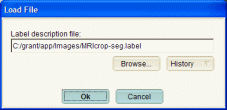
The file contains a dozen or so labels for describing brain anatomy. If you open the label editor, it should look like this:
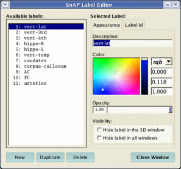
You can create your own label files. Just use the label editor to change existing labels and to add new labels, and then select File | Save Data | Label Descriptions... from the menu bar. |
Every time you work with an image, SNAP remembers all sorts of information about your session, and restores this information next time that you open the image. The list of labels is part of the information that SNAP remembers. |
In the step, we will manually segment the caudate nucleus. This step assumes that you are working with the image MRIcrop-orig.gipl, as recommended in Section 2, Step 1.
Make sure that the 'Segmentation Label' subpanel looks like this: |
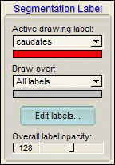
This means that we are going to apply the label called 'caduates' to the voxels that we segment. The 'draw over all labels' settings means that segmentation will override all labels that have already been assigned to voxels.
Enter the crosshairs mode. Position the crosshairs in such a way that the right caudate nucleus (shown below) is visible in all three slices. |
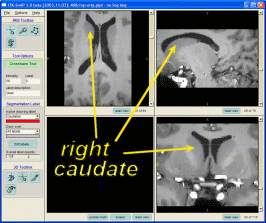
Now we are ready to begin manual slice-by-slice segmentation.
| Select the polygon tool in the IRIS toolbox (shown below) |
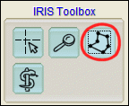
The polygon tool is used to paint closed polygons on top of the axial, sagittal and coronal slice windows. These polygons are then filled with the currently selected label. By painting polygons slice by slice, a whole 3D structure can be selected.
Click the left mouse button somewhere on the boundary of the right caudate. Continue clicking the left button along a sequence of points along the boundary. |
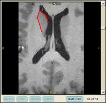
Click the right mouse button to close the polygon (i.e., to connect the first an the last vertices). |
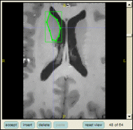
The green rectangle around the polygon indicates that all of the vertices are currently selected. Selected vertices can be moved by clicking and dragging the left mouse button. Let's select some vertices and move them:
Use the mouse to draw a box around some of the vertices in the polygon (to draw the box, click and hold the left mouse button near the upper left part of the slice window, drag the mouse towards the lower right corner and release the button once the box contains two or more vertices). |
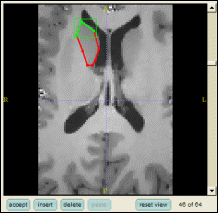
Click and hold the left mouse button inside the green box and drag it to move the selected vertices. |
In addition to selecting vertices and moving them, you can use the buttons located under each slice window to manipulate the polygon. Use the 'delete' button to delete the currently selected vertices from the polygon. Use the 'insert' button to insert new vertices between adjacent pairs of selected vertices.
Edit the polygon by selecting, moving, deleting and inserting vertices until you are satisfied with it. Use the 'accept' button to fill the polygon with the segmentation label 'caudates'. |
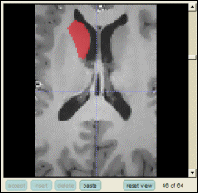
Once you have clicked 'accept', the voxels inside of the polygon are assigned the currently selected segmentation label.
If you are not satisfied with your result and want to erase it, you can do so by changing the active drawing label to the 'Clear' label, and painting a polygon on top of the part of the segmentation that you want to erase. When you press 'accept', the voxels withing this polygon will be assigned the clear label. |
SNAP remembers the last polygon that you used and lets you paste it. This makes segmenting a structure faster.
Move to the next slice in the slice window where you just painted (using the scroll bar or the mouse wheel). Press the 'paste' button to recall the last accepted polygon. |
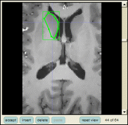
Edit the pasted polygon by selecting and moving vertices, and accept it when satisfied. |
So, by moving from slice to slice, pasting, editing and accepting polygons you can quickly segment the caudate. Notice that as you accept polygons in one of the slice windows, it becomes visible in the other slice windows as a line of voxels. SNAP is unique in letting you view and edit the segmentation in all three orthogonal slice windows at once.
[Optional] Continue segmenting the caudate in all three slice windows until you are satisfied with the result. Press the 'update mesh' button located below the 3D view window to see the segmented structure in three dimensions. |
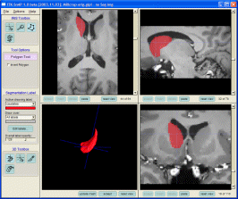
You can learn a lot more about interacting with the 3D window in a later section.
SNAP saves segmentation results as images. Each voxel in this image contains a number between 0 and 255, which indicates the segmentation label assigned to the voxel. Segmentation images can be saved in a variety of image formats and can be read by other programs.
Select File | Save Data | Segmentation Data... using the menu bar. A dialog will appear. |
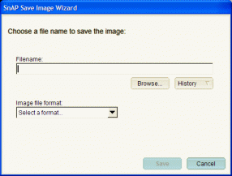
The dialog asks you for the file name of the image that will be saved. You can type in a filename, use the 'Browse' button to search for an appropriate location on your computer, or you can use the 'History' button to enter up a recently used file name.
Supply a filename to the wizard using the 'Browse' button. |
Once you select an image, its compete filename and image format will be displayed in the wizard, as illustrated below. SNAP tries to guess the format of the image file based on the file's extension. For some files, SNAP may not guess correctly, and you will need to select the correct format from the drop box
.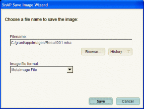
Press 'Save' to save the segmentation. |